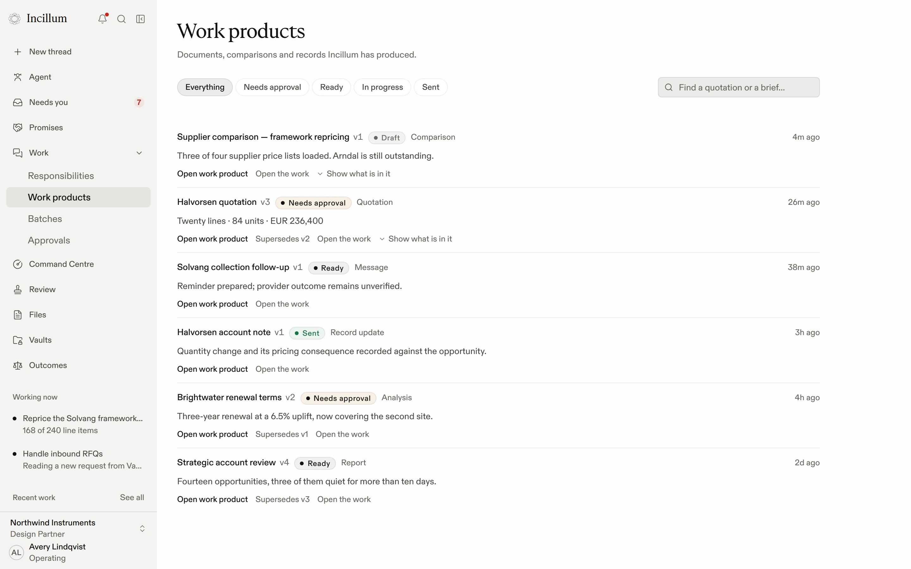
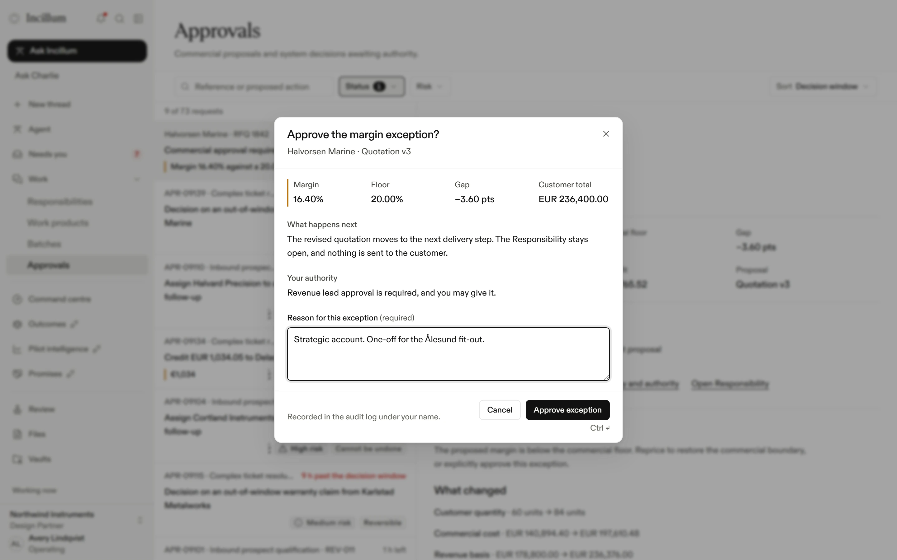
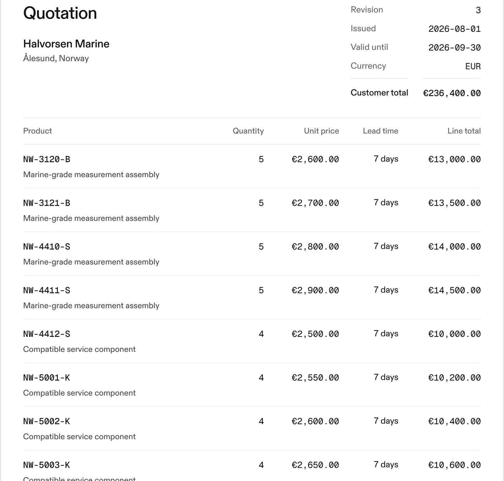

Charlie, in #rfq-1907
Line 09 changed: 84 to 60.
The covering email says 60. At 16.40% the quotation is under the floor. Avery, it is your call.
Posted for the team
To Aldermann Components
A firm price and lead time.
Line 09: 60 × DC/DC converter, 300 W, for delivery from 19 September.
Waiting for your approval
Call Marsden Industrial
Ask for it again.
And book a call for Thursday at 10:00, with the notes filed against the line.
Waiting for your approval
Charlie, in Incillum Studio
What Charlie does.
Everything a quotation needs between the request and the decision.
Charlie
The colleague in Incillum for commercial work.
Charlie
Intelligence for commercial work.
incillum.com